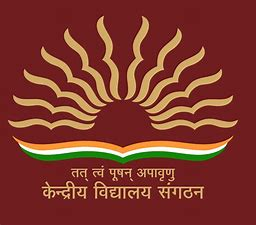

Kendriya Vidyalaya O. F. Chanda
About School
Kendriya Vidyalaya O F CHANDA(M S ), Bhadrawati Bhadrawati, is a Senior Secondary School (XI-XII), affiliated to Central
Board of Secondary Education (CBSE). The School is a Coed Day School, with classes from I to XII. It is an Hindi,
English Medium school. The school is located in Bhadrawati. Kendriya Vidyalaya O F CHANDA(M S ), Bhadrawati was
established in 1978. It is a Government School and is part of Kendriya Vidyalaya Sangathan (KVS) and is managed by
Defence.
Basic facts about Kendriya Vidyalaya O F CHANDA(M S ), Bhadrawati:
Year Established School Type Management Gender
1978 Government School Defence Coed
Boarding Grades
Day School Class I - Class XII
Curriculum School Level
Central Board of Secondary Education (CBSE) Primary School (I-V) - Senior Secondary School (XI-XII)
The motto of Kendriya Vidyalaya O F CHANDA(M S ) is तत् त्वं पूषन् अपावृणु (Tat vam Pooshan Apaavrunu). It is a Coed Day
School, which services the educational need of hundreds of students from I through XII. The classes in Kendriya Vidyalaya
O F CHANDA(M S ) for every academic year starts from April.
School is part of Kendriya Vidyalaya Sangathan (KVS) an autonomous body formed under Ministry of Human Resource
Development, Govt. of India. The Kendriya Vidyalaya (KV) is the largest chain of schools in India. There are over
1000 Kendriya Vidyalaya schools in India and Abroad providing education to more than 12 lakhs students every year.
KV's are considered to be the best CBSE schools in India as compared to other government schools and are among the
top schools in India. Read our detailed article on Kendriya Vidyalaya Admission Procedure, Age requirmeent for
admission and admission priorities for different services, Kendriya Vidyalaya Admission Dates and Kendriya Vidyalaya
Fees and exemptions. Also read about Kendriya Vidyalaya Central Schools Pass Percentage CBSE 10th and 12th and our
comparison of CBSE Result Analysis Kendriya Vidyalaya Central Schools vs other Private and Public Schools
Checkout everything about Kendriya Vidyalaya O F CHANDA(M S ), Bhadrawati, Bhadrawati Maharashtra. The best gift
you can give to your child is a right school for his/her academic, co-curricular and overall development. Read about
Kendriya Vidyalaya O F CHANDA(M S ), Bhadrawati Admission Procedure & Policy, Important Dates for Admission,
Kendriya Vidyalaya O F CHANDA(M S ), Bhadrawati Fee Structure, School Curriculum & affiliation, medium of instruction,
level, Extracurricular Activities, Facilities, Alumni, Faculty, Contact Details and other important information.
You can also explore list of best schools in Bhadrawati .
Explore Best Schools in India by city and Boards of Education: CBSE, ICSE, IB (DP, MYP, PYP), CIE (IGCSE,
Cambridge AS&A Level) and State Boards. Explore list of approved CBSE schools in India, Approved accredited
CIE Schools in India, Approved ICSE Schools in India, and Approved accredited IB Schools in India.
SchoolMyKids.com provides Parenting Tips & Advice to parents, Information about Schools near you and School
Reviews. Use SchoolMyKids Career Guidance to know about career options and courses for you or your child.